!id fastaiuid=1001(fastai) gid=1001(fastai) groups=1001(fastai),4(adm),27(sudo)January 25, 2023
From time to time, Jeremy organizes live coding session.
They are recorded (~1h each) and he takes one subject, and tackle it. They seem to be for beginners. But I am quite sure I can get some tips that I will write down on this page.
18 sessions so far (jan-23):
Live-coding (aka walk-thrus) ✅ - Part 1 2022 - fast.ai Course Forums
I try things with a complete fresh new user fastai in WSL
if needed, completey delete user and home directory
To launch X apps
Alias terminal explorer (nautilus)
pushd ~
tee -a .bash_aliases << EOF
alias terminal='dbus-launch gnome-terminal &'
alias explorer='dbus-launch nautilus &'
EOF
popdTake it into account
Update Ctrl-C Ctrl-V keybindings in gnome-terminal
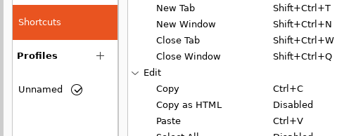
To avoid “unsafe legacy renegotiation disabled” (linked to my corporate network architecture)
and “SSL peer certificate or SSH remote key was not OK”
pushd ~
tee -a .bashrc << EOF
export OPENSSL_CONF=/etc/ssl/openssl.cnf
export REQUESTS_CA_BUNDLE=/etc/ssl/certs/ca-certificates.crt
EOF
source .bashrc
popdTo connect to gitlab
Not the smartest way to do it but I copy ssh keys from my main user
This is from https://github.com/conda-forge/miniforge#mambaforge
Mambaforge is miniforge but with mamba already setup.
And to this question > Do you wish the installer to initialize Mambaforge by running conda init? [yes|no]
We answer Yes, and then
==> For changes to take effect, close and re-open your current shell. <==
Jeremy hates to not automate things you could have to do several times.
To do it we revert everything done here manually (including conda-init in .bashrc)
by searching for python eol, you fall into https://endoflife.date/python
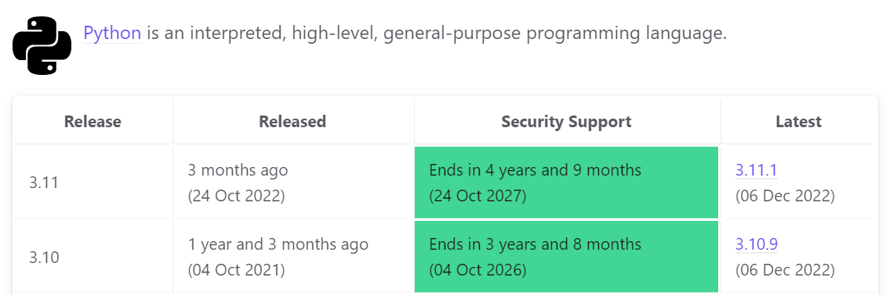
and recommandation from Jeremy is to take penultimate one. It looks like ot is what is followed by mambaforge
It is at https://github.com/fastai/fastsetup
It is Jeremy’s repo that contains anything he uses to setup a new computer
There is a thing called setup-conda.sh
wget --no-check-certificate --content-disposition -O - https://raw.githubusercontent.com/fastai/fastsetup/master/setup-conda.sh | bashand run mamba init to allow mamba activate
Setup pip, instal certifi and update CA
pushd ~
# setup pip
mkdir -p ~/.config/pip
tee ~/.config/pip/pip.conf << EOF
[global]
timeout = 1000
index-url = https://pypi.org/simple/
trusted-host = download.pytorch.org
pypi.python.org
files.pythonhosted.org
pypi.org
artifactory.michelin.com
extra-index-url= https://artifactory.michelin.com/api/pypi/pypi/simple
EOF
# install certifi
pip install -U certifi
export SSL_CERT_FILE=`python -c 'import certifi;print(certifi.where())'`
# update CA
export TMPDIR=`mktemp -d`
git clone git@gitlab.michelin.com:DEV/bib-certificates.git $TMPDIR
cd $TMPDIR
cat *trust-ca.pem >> $SSL_CERT_FILE
cd
# export SSL_CERT_FILE
tee -a ~/.bashrc << EOF
export SSL_CERT_FILE=`python -c 'import certifi;print(certifi.where())'`
export REQUESTS_CA_BUNDLE=`python -c 'import certifi;print(certifi.where())'`
EOF
source ~/.bashrc
popdHere Jeremy mentionned that Wes McKinney, author of “Python for Data Analysis” does much much things in ipython.
And this is worthy to be read
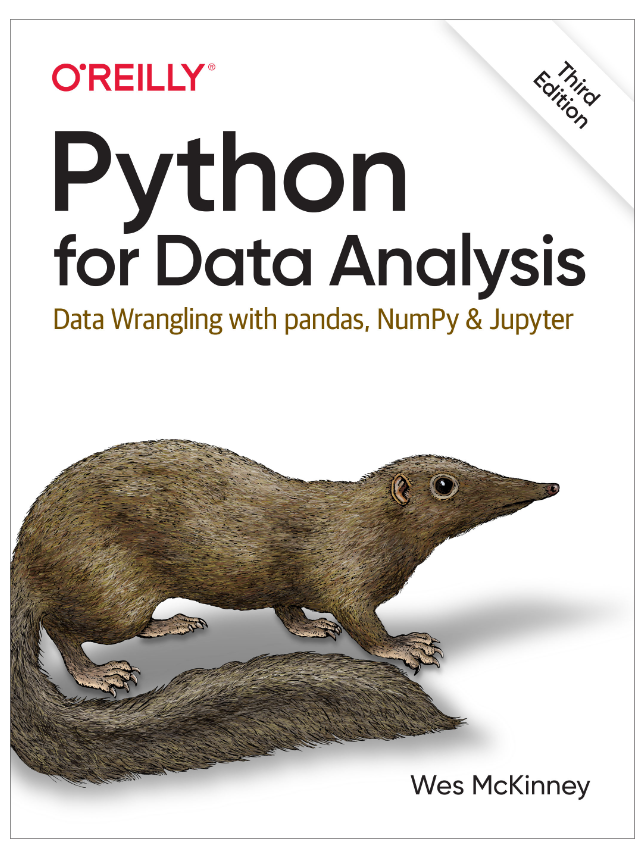
Let’s install pytorch (searching pytorch install) https://pytorch.org/get-started/locally/
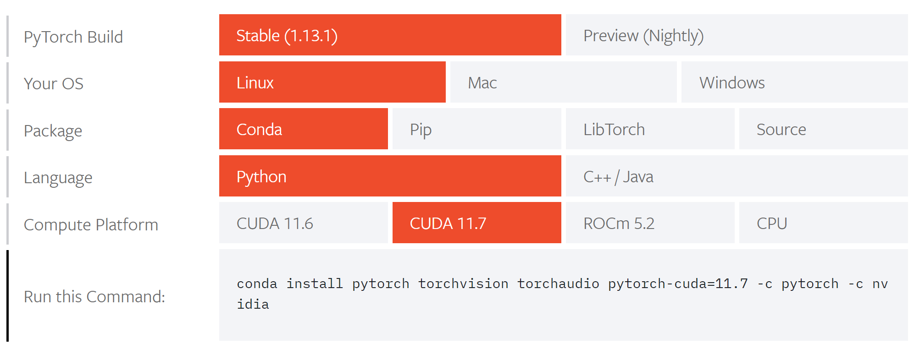
from ipython we can test
Let’s install jupyter (searching jupyter lab install) https://jupyterlab.readthedocs.io/en/stable/getting_started/installation.html
Because we use mamba, conda-forge channel is the default so
And we can test by running it jupyter lab
Because I have firefox installed in WSL, I don’t have the same issue Jeremy mentionned. And because I have another instance of jupyter running under my main user (where I blog this), it opens on port 8889
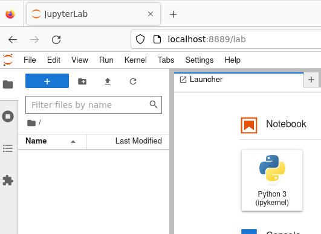
This was the base environnement setup after installing mambaforge
conda_env/base.txt
pip install -U certifi
export SSL_CERT_FILE=`python -c 'import certifi;print(certifi.where())'`
# update CA
export TMPDIR=`mktemp -d`
git clone git@gitlab.michelin.com:DEV/bib-certificates.git $TMPDIR
pushd $TMPDIR
cat *trust-ca.pem >> $SSL_CERT_FILE
popd
mamba install ipython
mamba install pytorch torchvision torchaudio pytorch-cuda=11.7 -c pytorch -c nvidia
mamba install jupyterlab ipywidgetsStarting from this fresh install, let’s retest stable diffusion and my issues on WSL:
mamba create --name fastai_diffusers --clone base
mamba activate fastai_diffusers
pip install -Uq diffusers transformers fastcore
mamba install matplotlib
cd ~/nbs
git clone https://github.com/fastai/diffusion-nbs.git
jupyter laband open/run stable_diffusion.ipynb
but this is not better (still on cuda 1.7, this is maybe why)
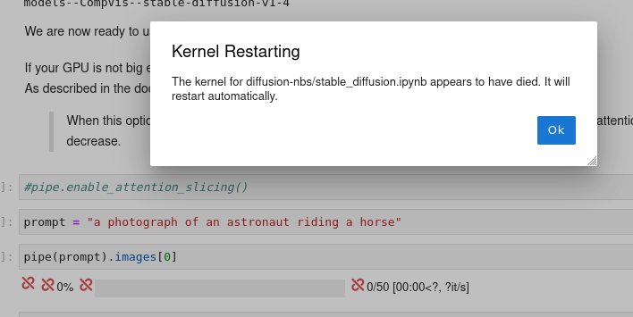
Jeremy shows stuff such as: - switchi users in Linux, - introduction to git and github - build a website with github - setup and use ssh keys - use tmux - create a notebook in jupyter lab - committing and pushing to git - fork a repo - install fastai and fastbook
This is a little bit as screen
installation
sudo snap install tmux --classic
usage
just run tmux to start a new window.
From here you have special commands, starting with binding key (default is Ctrl-b)
Start a new pan (vertical split): C-b %
Start a new pan (horizontal split): C-b "
Close a pan: C-d
Navigate through pans: C-b arrow keys
Zoom-in zoom-out: C-b z
Detach window: C-b d
Navigate in scrillback buffer: C-b [ then arrow keys, pg-up, pg-down
Re-attach window: tmux a
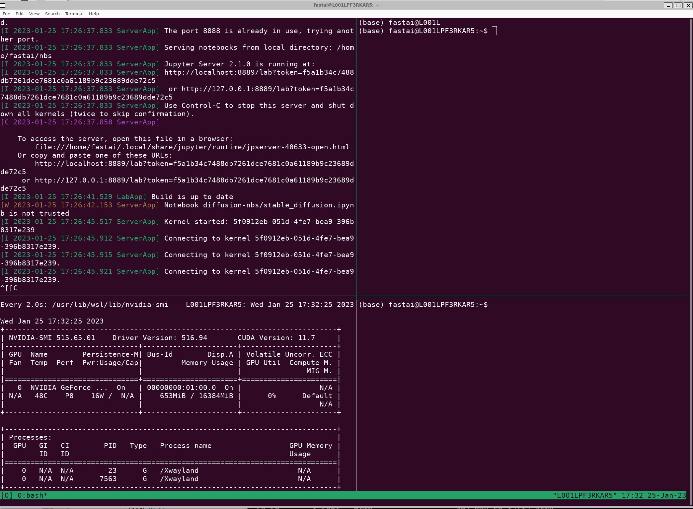
in command mode
1 - for titles # (if in code, it auto switches to markdown)
2 - for titles ##
3 - for titles ###
y to switch to code cells (much used to m for markdown)
mamba install -c fastchan fastai
And to run notebooks from fastbook, we have to install fastbook and sentencepiece as well
path = untar_data(URLs.MNIST_SAMPLE) fails with > [SSL: CERTIFICATE_VERIFY_FAILED] certificate verify failed: self-signed certificate in certificate chain (_ssl.c:997)
not exactly why because my certifi/certs are updated with my corporate CA
And if I workaround with this preceeding
I have another error which is MICHELIN GROUP - Internet Access blocked</h1><br>Access denied. You are attempting to access the Internet using an obsolete version of Chrome.
Looking in fastai code, I see something like https://github.com/fastai/fastai2/blob/master/fastai2/data/external.py#L162 s.headers.update({'User-Agent': 'Mozilla/5.0 (X11; Ubuntu; Linux x86_64; rv:71.0) Gecko/20100101 Firefox/71.0'})
Is it that user-agent is old and considered as dangerous by security agent in my company?
Should defintely solve the issue with untar_data
And at the end of this session, my base environment has been built this way
pip install -U certifi
export SSL_CERT_FILE=`python -c 'import certifi;print(certifi.where())'`
# update CA
export TMPDIR=`mktemp -d`
git clone git@gitlab.michelin.com:DEV/bib-certificates.git $TMPDIR
cd $TMPDIR
cat *trust-ca.pem >> $SSL_CERT_FILE
cd
mamba install ipython
mamba install pytorch torchvision torchaudio pytorch-cuda=11.7 -c pytorch -c nvidia
mamba install jupyterlab ipywidgets
mamba install -c fastchan fastai fastbook sentencepieceFrom previous session, question from audience about why Jeremy discourages to use multiple mamba environnement. Quite interesting.
I use github to sign-up on paperspace. And create a project, then a notebook (actually a server?)
https://console.paperspace.com/teox6gpp0/projects/pa3mp7r16wz/notebooks
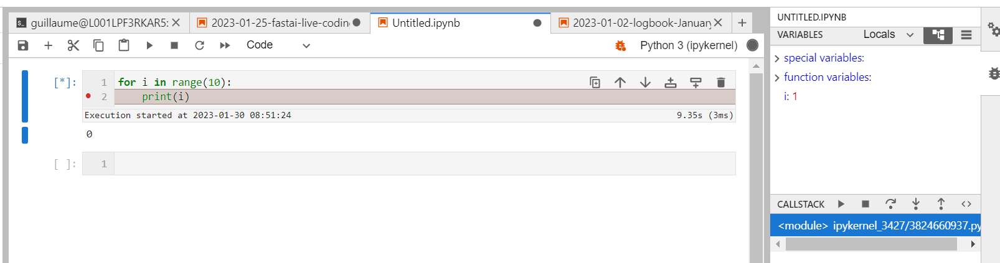
one can see the limit of from xxx import *, you will have the full variables in this window.
Just by adding %%debug
and for a reason it works better when you navigate into a function
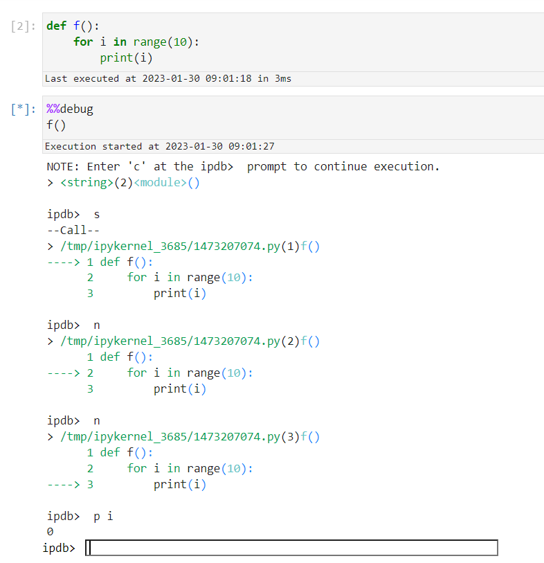
And have access to classic ipdb options
hfor help
c for continue
n for next
p for print
sfor step into
qfor quit
or a second way:
/storage is following you on all your servers.
To keep a consistent environment each time you start a paperspace server, Jeremy is following this process:
install additional lib with pip --user. e.g. pip install -U fastcore --user. It will install libs in ~/.local
move .local to /storage: mv ~/.local /storage
symbolic link back from /storage/.local to ~/.local: ln -s /storage/.local ~/
This has to be done once.
And because paperspace has this nifty thing to call /storage/.bash.local at the start of a session, you can automate things here.
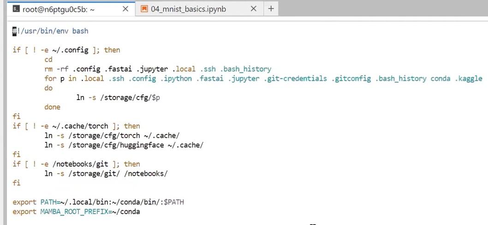
Actually it may be smarter to include this into /storage/pre-run.sh and not /storage/.bash.local. First one is run once at the start of your server. The last one is run each time you open a terminal
Jeremy gets some issue because site-packages was not part of sys.path…
['/mnt/c/Users/f279814/git/blog/posts',
'/home/guillaume/miniconda/envs/fastai/lib/python310.zip',
'/home/guillaume/miniconda/envs/fastai/lib/python3.10',
'/home/guillaume/miniconda/envs/fastai/lib/python3.10/lib-dynload',
'',
'/home/guillaume/miniconda/envs/fastai/lib/python3.10/site-packages']Essentially Jeremy has been improving his paperspace configuration
based on paperspace special configuration where
/storage is linked to your account (and maybe to your organization account) and will follow you under all your servers (notebooks in paperspace), and
/notebooks is linked to your server (notebook) and will follow you for this server, whatever is the machine you decide to attach to it.
Jeremy setups .local, .ssh, and then move that to /storage, create symlinks.
I am less interested by that one, watched at x2 speed…
overview on vim. Nothing new here, except for learning resources
https://www.openvim.com/ that I didn’t know, and
vimtutor as well
https://vim-adventures.com/ which is a kind of game
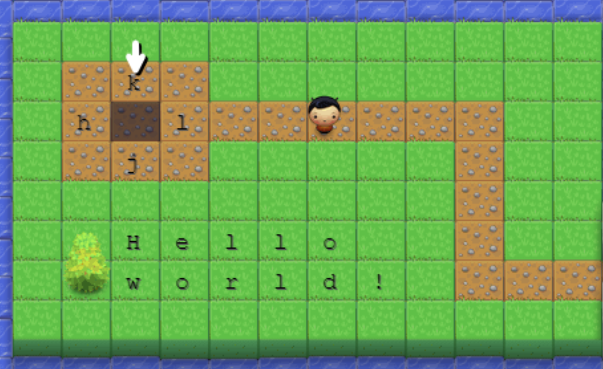
Jeremy’s vim config file is at https://github.com/fastai/dotfiles/blob/master/.vimrc
using a clone of fastai to illustrate, and Jeremy used an option to clone without the full depth which is much much quicker
git clone https://github.com/fastai/fastai.git --depth 1
1st thing is to install universal-ctags:
one option is to use snap: sudo snap install universal-ctags. It is what I used but Jeremy doesn’t lik snap (why?)
2nd one is mamba: mamba install universal-ctags
And now we can
cd ~/git/fastai/fastai
ctags -R .
#we can look into tags file with all symbols being used in this repo
less tags
#jump to a tag ArrayMask
vim -t ArrayMask
#open a file
vim layers.py
#enter tag to jump to (tj: tag jump)
#enter just the 1st letters and press enter, it will suggest matching cases
#e.g. Array
:tj Array
# or from code itself, if cursor is on a word, to get to its tag
Ctrl-]
#e.g. cursor on Module, Ctrl-]
class View(Module):
# will jump to torch_core.py
class Module(nn.Module, metaclass=PrePostInitMeta):
# to get back to previous tag
Ctrl-tWe can create a ctags config file to ignore locations such as .pynb_checkpoints…
One option is to install in a specific directory using mamba
mamba -p ~/conda install universal-ctags, and to move ~/conda to /storage, and link symlinks within /storage/.bash.local
Steps to setup paperspace:
upload ssh keys for github to paperspace /storage/cfg/.ssh (be sure to copy a key declared to github (yes double check that) and chmod 600 your private key)
git clone https://github.com/fastai/paperspace-setup.git in /notebooks
cd paperspace-setup
./setup.sh
Shutdown your machine and start up a new one
Fork fastbook
source ~/.bashrc # don’t know why it is not done automatically
git clone git@github.com:castorfou/fastbook.git in /notebooks
And now we can run notebooks from /fastbook/clean e.g. 01_intro.ipynb
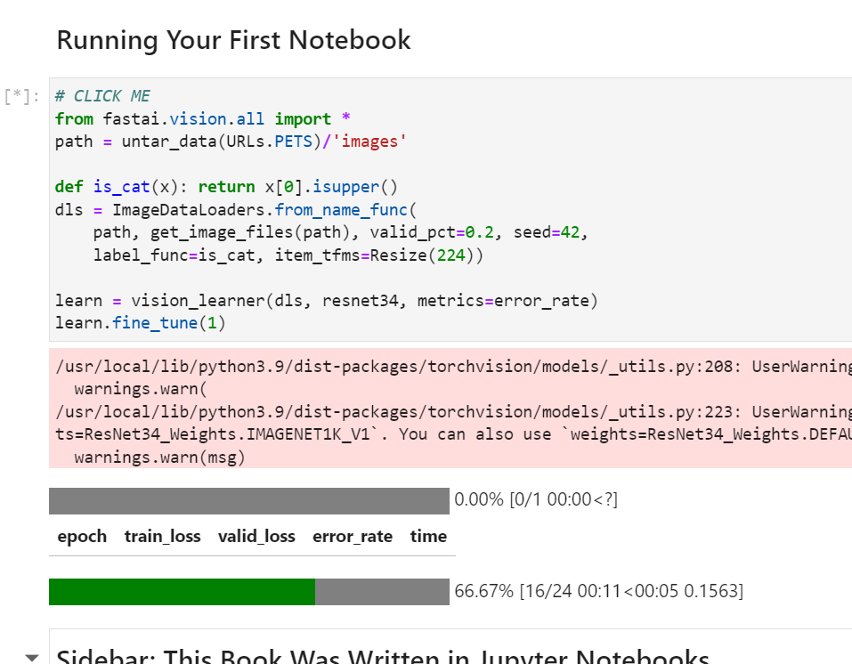
Jeremy dives into what happens here:
from xxx import *: and link to all.py
to break down cells into splitted cells (with one command per cell) using key shortcut: Ctrl-Shift -
It starts with an overview of different types of Kaggle competitions (kudos, knowledge, …, money) and going through a competition as suggested by Radek.
To follow I will switch to my fastai user, install kaggle into base environment. (pip install kaggle)
Get kaggle json from kaggle website. Account > API > Create New API Token
You get
Ensure kaggle.json is in the location ~/.kaggle/kaggle.json to use the API.
So download, copy (using upload in jupyter lab), move in right location, change owner and chmod 600
And I can download paddy dataset with
Unzip and then look at directory structure, number of files
find . -type d -print0 |
while read -d '' -r dir; do
files=("$dir"/*);
printf "%5d files in directory %s\n" "${#files[@]}" "$dir";
done
5 files in directory .
3469 files in directory ./test_images
10 files in directory ./train_images
380 files in directory ./train_images/bacterial_leaf_streak
1088 files in directory ./train_images/tungro
965 files in directory ./train_images/brown_spot
1442 files in directory ./train_images/dead_heart
1594 files in directory ./train_images/hispa
1764 files in directory ./train_images/normal
620 files in directory ./train_images/downy_mildew
337 files in directory ./train_images/bacterial_panicle_blight
1738 files in directory ./train_images/blast
479 files in directory ./train_images/bacterial_leaf_blightAnd then we can start to work on it.
from fastai.vision.all import *
Path.BASE_PATH = path = Path.home()/'git'/'kaggle'/'paddy'
path.ls()(#5) [Path('paddy-disease-classification.zip'),Path('sample_submission.csv'),Path('test_images'),Path('train.csv'),Path('train_images')]Path is neat. Define this BASE_PATH to simplify ls() output.
Had to insert
to be able to download resnet34
For a reason, surely the same issue as I got with diffusion model, my kernel dies when training
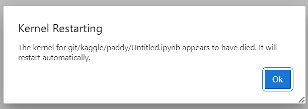
And Jeremy shares some tip about nvidia-smi. He suggests to use nvidia-smi dmon instead of watch nvidia-smi (and monitor sm column and see if io allow it to be high enough)
Running it in vscode, I have more information
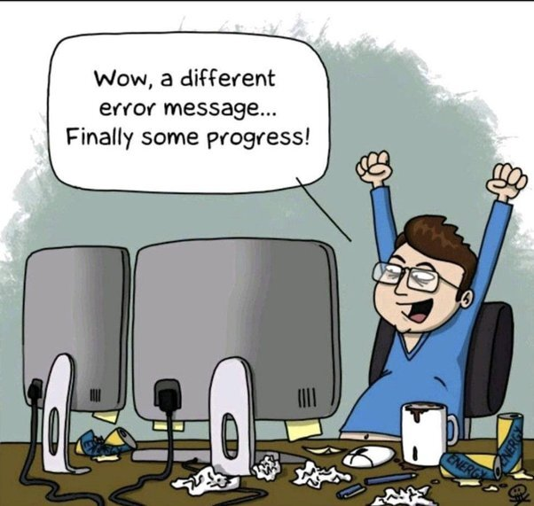
Could not load library libcudnn_cnn_infer.so.8. Error: libcuda.so: cannot open shared object file: No such file or directory
And to fix it, quite easy
add this to .bashrc
export LD_LIBRARY_PATH=/usr/lib/wsl/lib